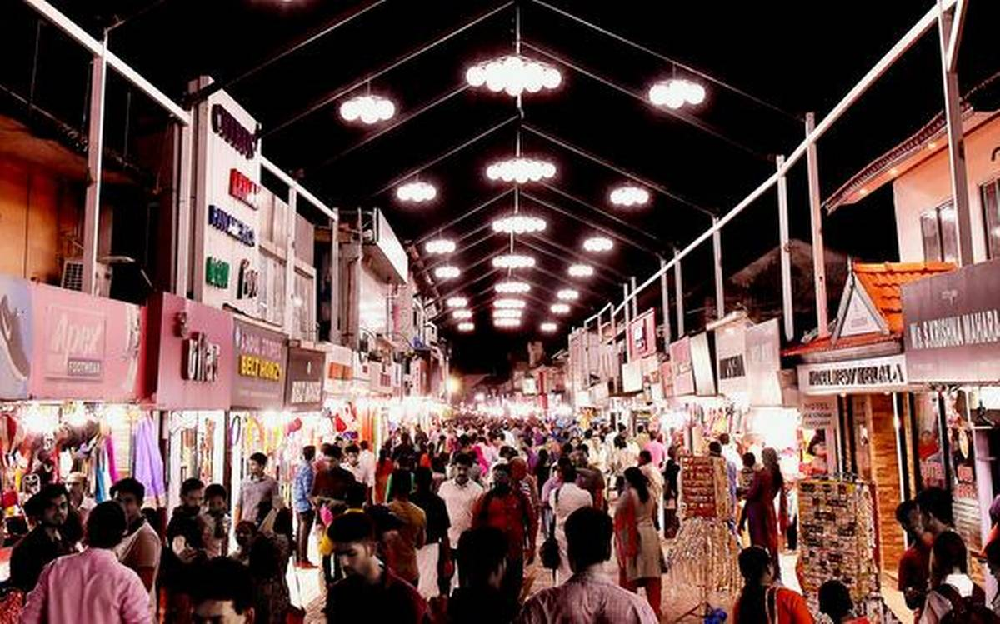

Formerly known as Calicut, Kozhikode is located in Kerala. It was the Capital of Malabar during the Zamorin rule 500 years ago and is famous for its centuries-old trade in cotton and spices with Jews, Arabs, Phoenicians and Chinese. Basking in the idyllic setting of the serene Arabian Sea on the west and the proud peaks of the Wayanad hills on the east, this district with the serene beaches, lush green countryside, historic sites, all combine to make Kozhikode a popular tourist destination.
Vasco da Gama had set his foot on the remote beach of Kappad in Kozhikode in 1498 and 'Discovered India' and established spice trade routes with the west. Kozhikode city is the marketing centre for commodities like pepper coconut, coffee, rubber, lemongrass oil etc., produced in Kozhikode and the neighbouring districts of Wayanad, Malappuram and Kannur. Being the major trade centre in Malabar and major exporter to foreign countries, the international travellers christened this district as ‘the noble emporium of India’.
Kakkayam is a dam site located in Kozhikode of Kerala state surrounded by lush greenery.The distance is about 15 km from Kakkayam Bus stop. 'Orakkuzhi' is a waterfall located just after the Dam. Near the dam location, different animals including elephants can be seen.There is a forest office at top of the dam. You need to take permission from the Forest authorities before going ahead. Cameras are not allowed near Dam area. It is a scenic place which offers a serene environment with a lot of recreational activities to the visitors. Near the dam location, elephants, bisons and other animals can be seen roaming around. The conservation of this place comes under the forest police.
Located in the spirit of this city, Mannanchira Square is christened after a clear water pool created by the King Manavedavan who was one of the former Zamorins. There are temples, mosques, ancient homes and churches built all around this place and there is also a music stage, an open theatre and a musical fountain which will create a dream atmosphere of a fairyland taking you back into the times of kings, palaces and kingdoms.
Sparkling in an old-world allure, Kozhikode Beach is an ideal location for relaxing and unwinding yourself away from the modernity of today’s world. This beach is a primary tourist attraction of Calicut and has been attracting visitors for the best sunrise and sunset to witness. During January, a significant Malabar Mahotsavam is organized on the beach which will let you catch a glimpse into the rich Indian culture and the traditions of Kozhikode, plus with a backdrop of mesmerizing Arabian Sea it doesn’t really matters which time of the year you visit this beach as with every season the charisma of Kozhikode Beach becomes more tempting than ever!